О найфомании и ножах как таковых
Вместо предисловия:
- Сколько ножей у обычного человека?
- У обычного человека всегда при себе 2-3 ножа.
- Но это же человек, который увлекается ножами!
- У человека, который увлекается ножами, с собой 5-6 ножей.
- Но это же маньяк!
- Нет, у маньяка с собой 10 ножей.
- Но это уже странный человек!
- У странного человека при себе вообще нет ножей.
- Но это как раз обычный человек!
- Нет, мы уже говорили, что у обычного человека при себе 2-3 ножа...
(c) Старинный найфоманский анекдот
Многим моим друзьям известно, что я неравнодушен к ножам. Я уже писал про кухонные ножи, но к ним я не испытываю каких-то особых чувств, это для меня просто инструменты и да, меня раздражает, когда я вижу, как неплохим микроскопом забивают гвозди и громко жалуются на то, что и этот микроскоп оказался никуда не годен.
Совсем другое дело - ножи, не относящиеся к кухонным. Это как раз те вещи, которые задевают струны моей души. Кажется, это началось с седьмого класса, когда я посмотрел советский мультфильм "Маугли", где главный герой из всех несметных сокровищ выбрал себе кинжал, повесил его на шею и стал с ним неразлучен. Для меня нож - являет собой нечто большее, чем сумма полоски стали и рукояти. За понятием "нож" скрывается целый мир. Это культура, эстетика, это один из древнейших инструментов, прошедший долгий эволюционный путь, длиною в тысячи лет, это миллионы (я не шучу) людей, объединённых общими интересами, клубы фанатов той или иной модели, праздничные новогодние каталоги фирм-производителей, многочисленные обзоры и тесты на ютубе, соревнования и школы ножевого боя, сотни марок сталей, кустари-одиночки и бренды с исторей, насчитывающей десятки, а то и сотни лет, произведения искусства в конце-концов. Издавна ножи украшали резьбой, травлением, в рукоять икнрустировали драгоценные камни, использовали ценные породы дерева и драгоценныe металлы.
Вы можете себе представить многотысячную армию фанатов какой-то определённой модели плоскогубцев? Или строительный молоток с рукоятью из чёрного дерева, отделанного серебром? Или, скажем, огромную выставку ножовок по металлу, на которую слетаются люди со всей страны, а то и из-за рубежа? Глянцевый пятидесятистраничный каталог "Лучшие лопаты ноября 2018" фирмы X?
О вероятных причинах ножевого феномена
Почему же так произошло? Почему нож вышел за рамки понятия "инструмент" и собрал вокруг себя столько неравнодушных?
Одна из причин заключается в том, что нож в числе прочего является и оружием, а некоторые люди очень любят оружие. Оно позволяет им чувствовать потенциальное превосходство над окружающими, оружия не имеющими. Создаёт приятную иллюзию могущества. Вспомните, сколько существует американцев, имеющих дома по десятку винтовок и россыпь короткоствола. Не думаю, что такой арсенал действительно необходим для защиты своей жизни и собственности. С другой стороны - сколько существует людей, собирающих марки, которые так же не используются по прямому назначению?
Вот и вторая причина - коллекционирование. Если спросить коллекционера чего угодно, зачем он собирает монеты, минералы, ракушки, ножи - чётко сформулированного ответа вы скорее всего не получите. Человек просто испытывает приятные эмоции от обладания некими предметами, примите это как факт. Уровень этих эмоций в какой-то мере пропорционален соответствию ожиданий человека действительным качествам предмета - его красоте, функциональности, удобству использования, редкости наконец. Как раз для таких людей и выпускают лимитированные версии "такого же точно, только с перламутровыми пуговицами" чего угодно по тройной цене. И в отношении ножей это более, чем справедливо. Различные именитые бренды выпускают лимитированные версии ножей, цены на которые могут измеряться тысячами и десятками тысяч долларов за экземпляр. В среде найфоманов такие ножи называются "полочниками", потому что использовать их в быту - слишком дорогое удовольствие. Первая же царапина на таком экземпляре сразу может сбросить его стоимость в несколько раз. Поэтому нож ложится на полку и греет душу своего обладателя самим фактом существования. Периодически некоторые полочники аккуратно разбираются их хозяевами, смазываются, протираются мягкой тряпочкой и отправляются обратно на своё место.
Третья причина - это функциональность. По значимости я бы даже поставил её на первое место. Нож - наиболее функциональный инструмент из категории простых инструментов. При всей любви отдельных индивидов к огнестрельному оружию, стоит признать, что с помощью штурмовой винтовки крайне неудобно резать батон на ломтики, а пистолет макарова плохо подходит для намазывания масла на бутерброд. У огнестрела узкое функциональное назначение - поражение живой силы противника. С помощью ножа вы можете приготовить пищу, создать для себя иные орудия труда или обороны, вскрыть упаковку, отрезать торчащую нитку и, при должном умении, защитить себя. Это всё очевидные применения ножа. Но как говорится, когда в руки попадает молоток, всё вокруг кажется гвоздями. А чем кажется всё, когда тебе в руки попадает нож? И вот не надо рисовать в своем воображении маньяка с тесаком.
И конечно же, нельзя забывать об эстетической составляющей, это четвёртая причина. Мне не нравятся ножи, рукояти которых украшены затейлевой резьбой, а клинок - травлением (привет "Ворсме", "Кизляру" и прочим). Я люблю эстетику простых линий. Для меня идеал того, как должен выглядеть нож, это пожалуй, ColdSteel Tanto Recon San Mai III.
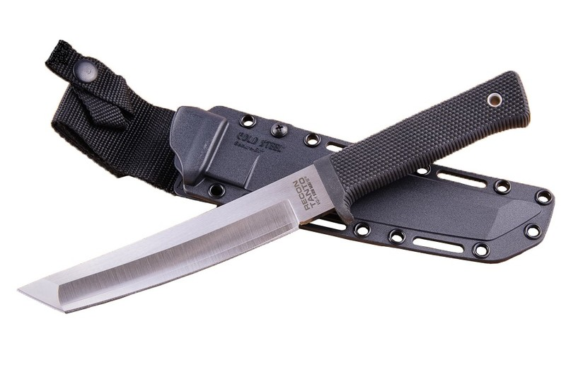
Приобрести такой мне не позволяет земноводное. Средняя цена на данный нож в России сейчас около 12 с половиной тысяч рублей. На втором месте пожалуй, линейка CRKT M21 и M16. У меня был CRKT M21-04G и я с ним чего только не прошёл. Даже когда я делал предложение своей будущей жене, он был со мной. Жена потом смеялась - "попробуй откажи, когда предложение тебе делает человек с тремя ножами, а вокруг два десятка байкеров!" Да и в ЗАГСе этот нож тоже висел на поясе. К сожалению, я его потерял при неудачном стечении обстоятельств.
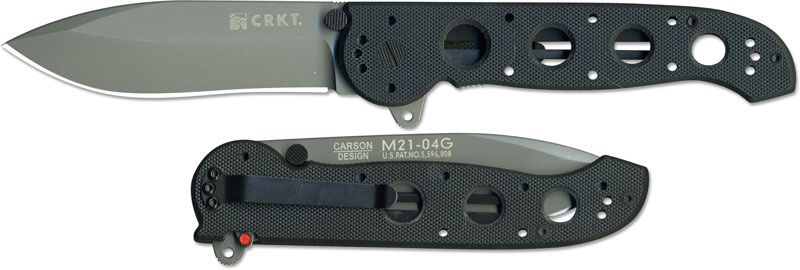
В тот период, когда я ходил в школу ножевого боя, мой друг сделал мне имитацию ножа (они используются на тренировках), повторяющую по форме и размерам этот M21-04G. После утери "эмки" я долгое время испытывал тоску по этому ножу. Сейчас на смену потерянному я взял новый M16-04Z (да, я неравнодушен к клинку формы "американский танто", что уж поделать), но тот утерянный он всё-равно мне в полной мере не заменит. С новым ножом наблюдается одна проблема - он довольно быстро ржавеет в условиях повышенной влажности, что летом в кармане практически норма. Когда появится достаточное количество времени - заеду к другу за ортофосфорной кислотой и будем пробовать фосфатировать клинок.
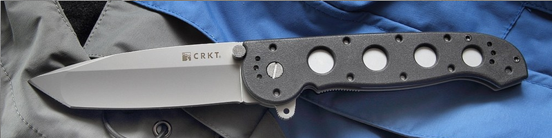
Ножи M-серии просты и безотказны как автомат калашникова и в то же время имеют какой-то свой шарм, гармоничную красоту. Да и когда берёшь такой нож в руку, прямо ощущается некая надёжность. Чувствуешь, что это вещь, способная прослужить десятки лет, а при добросовестном уходе - возможно и сотни. Или вот, например, CRKT Nirk Tighe! Ну разве он не прекрасен?
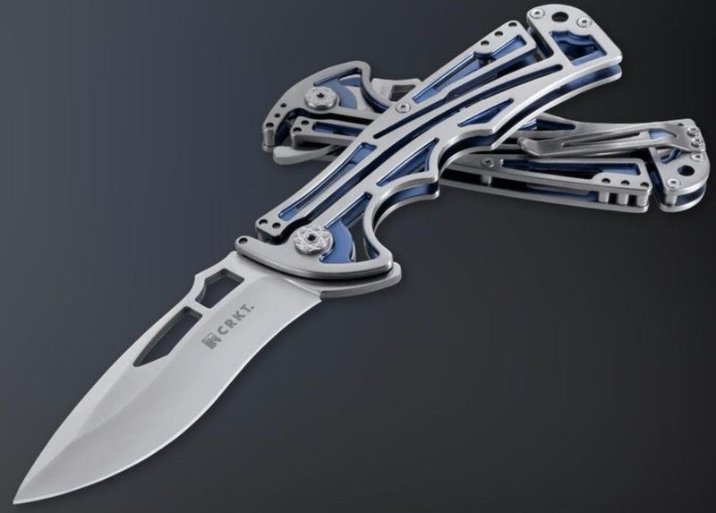
Это тоже один из моих любимцев. Я мог бы продолжить список, рассказать о каждом ноже подробнее, но боюсь, что тогда я ещё долго не закончу сей опус, хотя и без того подозреваю, что далеко не всем это интересно и мало кто прочтёт до конца. Некоторые спросят - а почему именно CRKT? Не Kershaw, не Benchmade, не Spyderco? Это всё тоже у меня было или есть, просто данные конкретные экземпляры CRKT пришлись больше по душе.
О медитативном
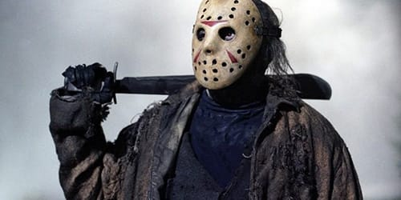
Хотяяя... Наверное, есть в любви к ножам всё-таки есть что-то немного нездоровое. По крайней мере так это может выглядеть со стороны. Знаете, мне нравится процесс доведения ножа на керамическом мусате. Я могу залипнуть в этом процессе больше, чем на час. Сами тактильные ощущения, звук скольжения керамики по лезвию оказывают на меня странное влияние. Я погружаюсь в состояние, вероятно больше всего похожее на медитацию. Тело расслабляется, движения приобретают плавность, все мысли медленно растворяются а всё сущее вокруг перестаёт иметь значение. В голове становится как-то непривычно чисто, светло и пусто. Только руки привычно делают свою работу и слышно ритмичное "шшшшшшш" проходящего по клинку кусочка керамики. Нож уже давно острый, но я сижу и продолжаю этот процесс столько, сколько того душа просит. Иногда я при этом закрываю глаза, чтобы ничто не отвлекало меня от этого другого "ничто". После этого я на некоторое время превращаюсь в другого человека. В человека, который несколько иначе смотрит на мир. Человека уравновешенного, отрешённого и полного каким-то своим тихим, непонятным, но тем не менее очень простым счастьем.
О неочевидных применениях ножа
Я не помню, склько лет назад я в последний раз воспользовался ножницами, чтобы укоротить свои ногти. Выяснилось, что это крайне неудобно. Ногтевая пластина под ножницами расслаивается, становится неустойчивой к внешним воздействиям, женщины так вообще потом свои ногти обрабатывают пилками (что опять же, требует времени). Ноготь, срезанный хорошо заточенным ножом имеет идеально гладкий торец, который блестит, когда на него падает луч света. И в отличие от ножниц, нож способен без пробоем убрать с торца ногтя кусочек, шириной в десятую долю миллиметра, поэтому изменить форму ногтя не составляет никаких проблем. Не понимаю, почему окружающим кажется это настолько диким, когда они об этом узнают. И что ты будешь делать, если сломал ноготь, помогая на стройке отцу? Будешь слезать со строительных лесов, раздеваться, искать ножницы? При наличии ножа решение проблемы займёт пять секунд.
С помощью обуха ножа я доставал из под шкафа ключ, до которого не смог бы дотянуться руками. Отжимал клинком ножа на даче друга форточку, когда мы забыли ключи, резал веники для бани, сидя ночью на берёзе под проливным дождём, вырезал трафареты для покраски гири (не спрашивайте меня, это длинная история), помогал вешать шторы, используя нож как удлиннение руки, чтобы закидывать кольца на крючки без помощи табуретки, поджимал контакты держателя батареи в телефоне, сделал из куска дерева пробку нужной формы и толщины, чтобы починить падающую гардину у мамы дома. Зачищал провода и витую пару, сделал пару деревянных импровизированных вилок из близстоящего куста для поедания консервированных ананасов из банки, моим ножом отрезали подошву приплавившегося к печке на даче кроссовка, потому что все остальные ножи были совершенно тупыми... Одним словом, если нож уже есть, вам в нужный момент придёт в голову, как его применить. Если же ножа нет, вы никогда не подумаете о том, что с его помощью можно было бы решить некую задачу.
Но... Есть такое понятие, как "нецелевое использование ножа". Возможно, оно пройдёт и без последствий, но вполне вероятно, что нет. Нож можно достаточно легко повредить, пытаясь взаимодействовать с винтами, консервными банками и тому подобными вещами. Как я уже писал в предыдущей статье про ножи, для этого есть другие инструменты. И тут я бы хотел рассказать о том, как нечто, что ранее воспринималось мною как инструмент, перешло в категорию вещей, имеющих для меня особое значение. Это мультитулы от victorinox. Скажу сразу, долгое время я их недооценивал, не считал ножами, хотя официально это и называется "швейцарский нож". Но ведь нож - это всего лишь одна из десятка, а то и нескольких десятков разнообразных функций данного инструмента, поэтому для меня он является "мультитулом". Я не испытывал никакого эстетического влечения к подобным вещам. Однажды мой друг подарил мне victorinox на день рождения. Я поблагодарил, бросил викс на полку и забыл о его существовании. Спустя пару лет, во время очередной уборки я нашёл подарок и переложил его в сумку "на всякий пожарный случай".
О "швейцарцах"
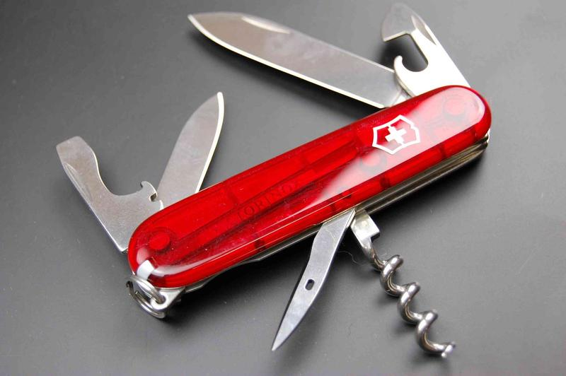
И эти пожарные случаи не заставили себя ждать. То нужно было открыть бутылку вина на дне рождения, то у кого-то выпал винтик из очков, то нужно было раскрутить системник, то отпилить выступающий кусок фанеры на балконе... В какой-то момент я понял, что уже давно не точил свой основной нож, но он всё ещё остаётся острым, потому что викторинокс принял на себя удар и начал выполнять все функции кроме резки и вскрытия упаковки. Прошло 14 лет, накладки ножа со временем покрылись царапинами, но всё остальное было практически в идеальном состоянии, разве что шило-развёртку немного повредил - доставал застрявшую насмерть бобышку оборвавшегося троссика сцепления на бывшем мотоцикле. Фактически с помощью этого инструмента я проделал отверстие диаметром миллиметра в 3 и глубиной в 5 в куске алюминия и теперь он уже не такой острый, но всё ещё вполне рабочий. Накладки я заказал и сменил год назад и викторинокс стал как новый. Такими темпами я этот нож ещё внукам передать смогу. Заодно в новых накладках появился слот под жёсткий пишущий стержень, при необходимости заменяющий ручку и под булавку, которой удобно открывать лоток симкарт.
Вообще, швейцарские армейские ножи являются целым миром внутри мира ножей как таковых и складных ножей в частности. До сих пор считаю идеальным тандемом складной нож с длиной режущей кромки клинка около 10 сантиметров и викторинокс, обладающий кучей функций. Дело в том, что когда ты в чьём-то присутствии достаёшь обычный складной нож (например на почте для того, чтобы вскрыть посылку), некоторые незнакомые люди начинают смотреть на тебя так, будто у тебя в руках оказалась как минимум, окровавленная бензопила, а на лице у тебя хоккейная маска. А вот викторинокс даже в самой своей большой 13-ти сантиметровой инкарнации совершенно не вызывает никакой реакции у окружающих - это же викторинокс, в самом деле! Мне кажется, даже если ты зайдёшь в общественное место с дымящимся пулемётом на плече, на тебя никто не обратит ни малейшего внимания, если вышеобозначенный пулемёт будет окрашен в красный цвет и на нём будет красоваться эмблема Victorinox.
Вообще, продукция фирмы victorinox с момента, когда я начал в ней понемногу разбираться, стала вызывать у меня восхищение. Инструменты, входящие в состав этих мультитулов прошли долгий эволюционный путь - более 120 лет.
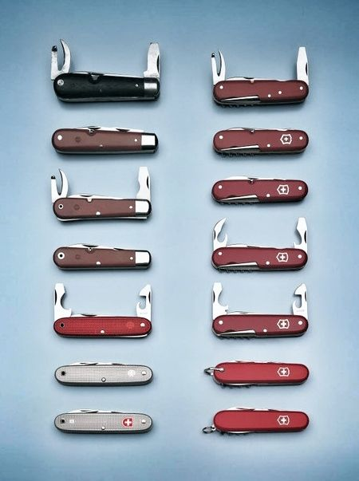
Любая вещь, если над ней работать 120 лет должна приблизиться к идеалу настолько, насколько это вообще возможно. Особенно могу отметить в этом отношении то, как викторинокс делает три вещи - открывашку консервов, пилу по дереву и ножницы. Ума не приложу, как можно было бы сделать это лучше. Периодически, когда возникает необходимость открыть банку консервов, я ухожу с кухни за виксом, потому что сам процесс открывания банки с его помощью доставляет мне удовольствие и край металла остаётся ровным, будто отрезанным лазером в отличие от зазубренного края после обычных открывашек. Торцевая часть этой открывашки сделана таким образом, что идеально подходит для работы с крестовыми винтами типа phillips. Сколько системных блоков я собрал и разобрал с помощью этого викса - не сосчитать. Большинство саморезов с крестовым шлицем так же откручиваются и закручиваются этой открывашкой безо всяких проблем. Да и с небольшими винтами с плоским шлицем тоже вполне можно работать с помощью всё того же инструмента. Ещё он помогает при разборке каких-нибудь пластиковых корпусов, где в щель нужно вставить что-нибудь тонкое, и достаточно прочное. Или с его помощью намного проще открыть кабель-канал, чем мне на протяжении ремонта приходилось много раз заниматься. И это всего лишь один из многих инструментов - какая-то открывашка для консервов. Если в существовании магии Apple я давно и сильно сомневаюсь (на то есть много причин), то в существовании магии victorinox - ни минуты. Знаю несколько людей, которые купили себе "викс" ради ножниц, которые всегда можно носить с собой в кармане. Они настолько удобны и хороши, насколько им это позволяет размер и формфактор. И, наконец, пила! Это нечто. Деревянную ветку диаметром сантиметров в пять виксом можно перепилить быстрее, чем ножовкой, серьёзно. Потому что пила на виксе очень агрессивна и остра. Ножовки по дереву так качественно не делают, по крайней мере я не видел.
Ещё один интересный момент - викторинокс снабжает модели своих многопредметных ножей как номерами, по которым можно точно и быстро найти нужную модель, так и говорящими названиями. Название в ряде случаев может отвечать некоей специализации ножа. Например, Rucksak по набору инструментов хорошо подойдёт для туристов. Hunter - для охотников, он содержит в себе специальное лезвие для снятия шкуры. Skipper - для яхтсменов, в составе есть специальный инструмент для облегчения развязывания морских узлов. CyberTool - для айтишников и людей, связанных с радиоэлектроникой, существуют версии с миниатюрными плоскогубцами и отвёрткой с набором небольших бит с разными шлицами. Jockey - для тех, кто занимается лошадьми, на борту несёт приспособление для извлечения камней из копыт лошади. RescueTool - для спасателей, стропорез легко хорошо режет ремни безопасности, есть стеклобой, а накладки ядовито жёлто-зелёного цвета с красной надписью мало того, что бросаются в глаза на любом фоне, так ещё и светятся в темноте. И так далее и тому подобное.
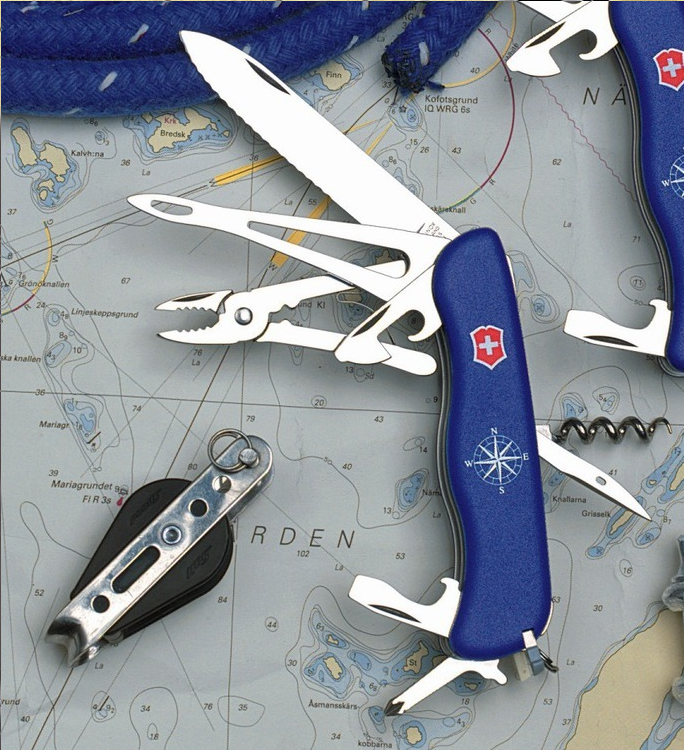
Помимо фирмы victorinox существовала и другая широко известная фирма, создававшая швейцарские армейские ножи. Это фирма Wenger. Их логотипы достаточно похожи, как и ножи, выпускавшиеся обоими этими фирмами, поэтому периодически wenger и victorinox путают. Много лет в швейцарскую армию эти две фирмы поставляли свои ножи поровну. В 2005-м году Victorinox приобрела Wenger, дабы компания не была продана зарубеж, но при этом Wenger была предоставлена свобода развиваться в своём направлении, а в 2013-м было прекращено производство ножей под маркой Wenger. При этом пара модельных рядов претерпела изменения. Формфакторы остались от Wenger, а вот инструменты в них были частично заменены на инструменты от Victorinox. Та же горячо любимая мной открывашка для консервов, например.
Кроме разумных и сбалансированных по функциям швейцарских мультитулов бывают и совершенно неутилитарные экземпляры, представляющие интерес разве что для заядлых коллекционеров или не менее заядлых извращенцев. Пользоваться такими вещами не то чтобы совершенно невозможно, но крайне и крайне затруднительно. Скорее это некое подобие "музея инструментов", производимых фирмой, объединённых в одном корпусе. Взгляните на Wenger giant knife. 140 функций, кажется. Это при том что модель со 147-ю функциями была занесена в красную книгу. Если вы с помощью подобного приспособления сможете вкрутить саморез в стену, я буду апплодировать вам стоя!
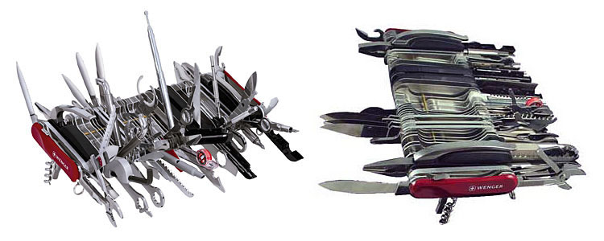
Из оптимальных вариантов как по моему личному мнению, так и по многочисленным рейтингам (эти ножи часто входят в десятку самых популярных у victorinox) являются следующие модели: Spartan, Climber, Camper, Huntsman. Заодно они и самые недорогие. Climber - то же самое, что и Camper, только вместо пилы - ножницы. Если у вас появилась мысль с чего-нибудь начать, посмотрите в сторону этих четырёх вариантов.
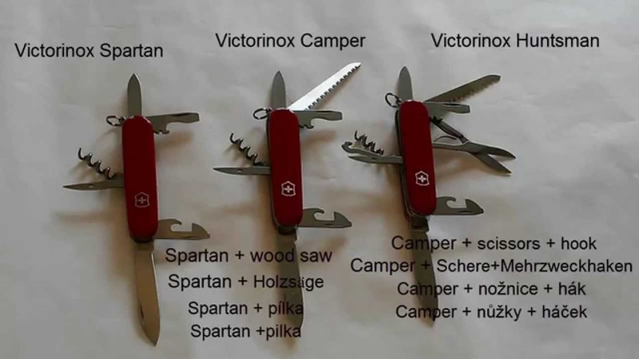
Есть и разумные карманные "наборы инструментов". Я себе когда-то приобрёл Handyman, теперь практически постоянно живёт у меня на рабочем столе, ни одна пайка без него не обходится. Он настолько мне понравился, что я решил заказать ещё один, чтобы носить его повсюду с собой в рюкзаке.
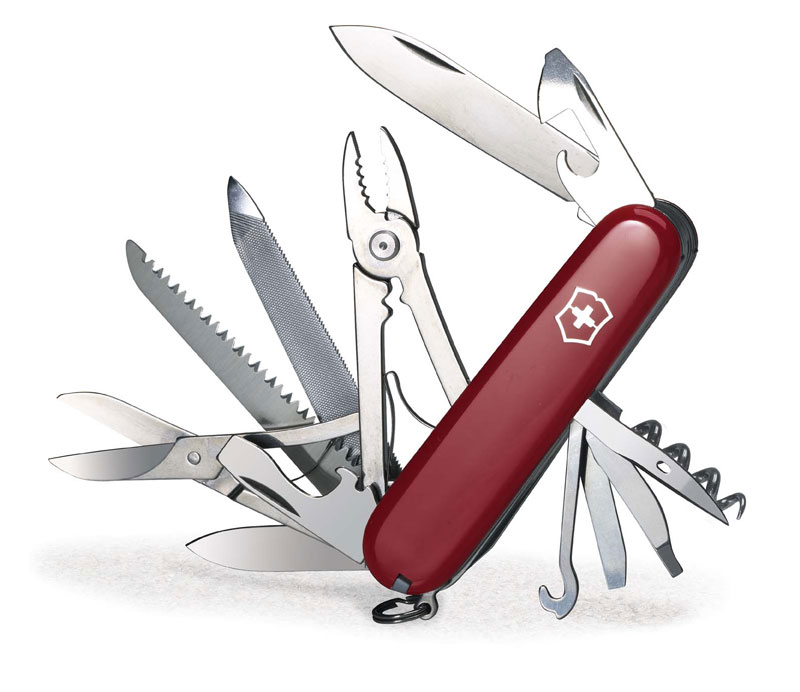
Для вылазок на природу очень хорош Атлас или тот же Rucksack. А если вы заядлый турист, то что-нибудь из больших рейнджеров с пилой.
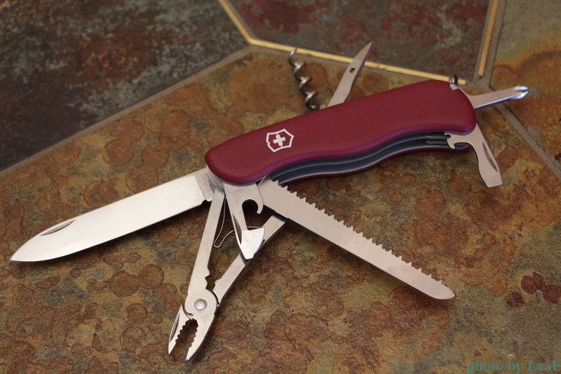
О мультитулах привычного формата
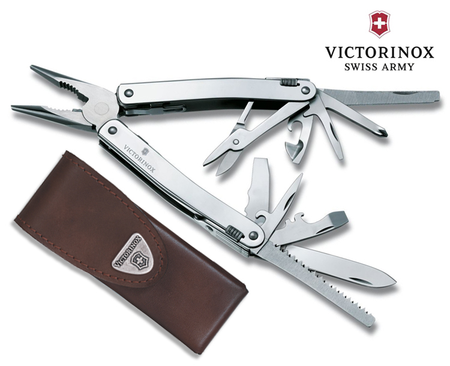
Не так давно один мой знакомый попросил меня раздобыть ему складной мультитул от Victorinox. Мне стало любопытно, почему именно этот формат и именно от Victorinox, хотя существует множество альтернатив от того же Leatherman? Как оказалось, это порядочно дешевле и, что самое интересное, в отношении некоторых аспектов - качественнее. Вот тут например, гнут и перекусывают гвозди викториноксовским мультитулом и мультитулом от Letherman: https://www.youtube.com/watch?v=kIm9JTTVtZQ
DIY
Ну и напоследок. Добавлю несколько фотографий своего кустарного творчества. Чехлу на меньший victorinox уже лет шесть, исправно продолжает служить.
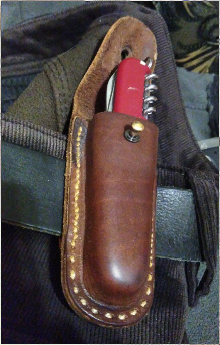
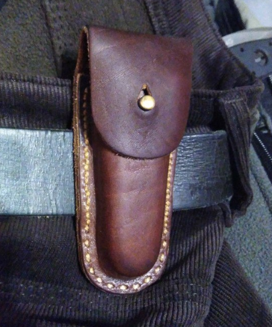
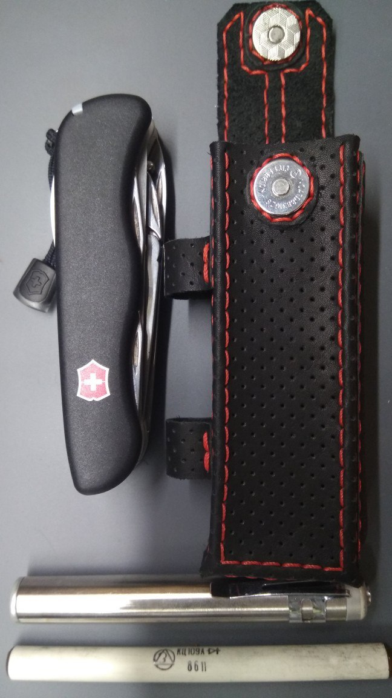
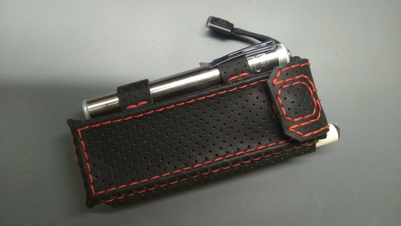
Желаю всем добра и чтобы никогда не пришлось использовать нож в целях самообороны.
Теги: knifes